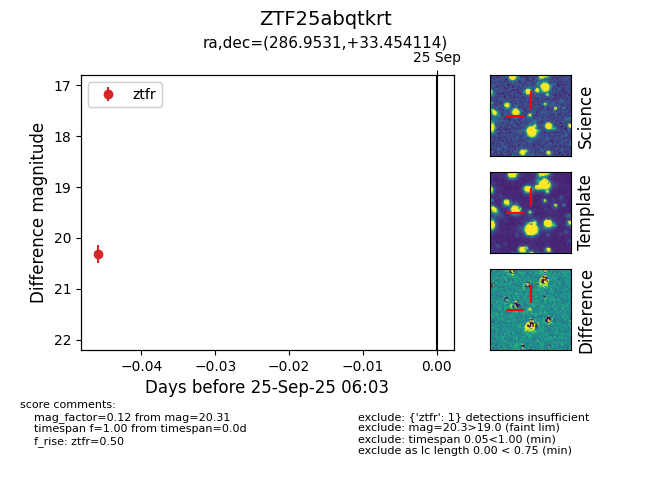

FINK: ZTF25abqtkrt
Lasair: ZTF25abqtkrt
ALeRCE: ZTF25abqtkrt
ZTF25abqtkrt (ztf,fink)
equatorial (ra, dec) = (286.9531,+33.45411)
galactic (l, b) = (64.8211,+11.44123)

last ztfr=20.31
1 ztfr detections